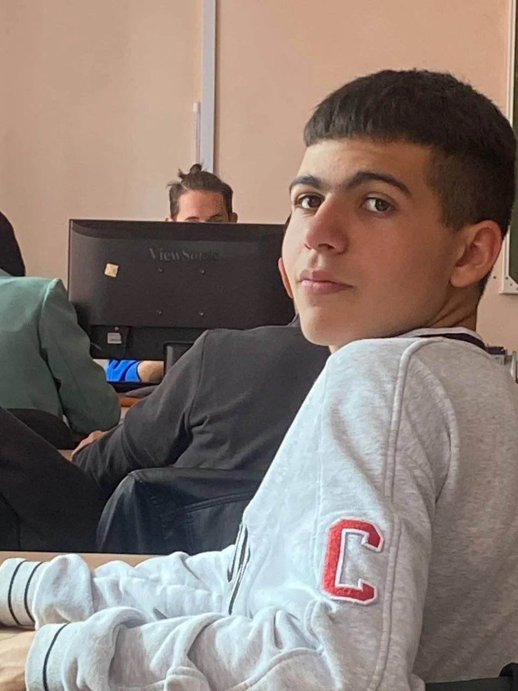

Зачем обезьяне Эдмону фонд?
Представьте, что ваше тело — это тюрьма. Вы всё понимаете, но ваши мышцы живут своей жизнью: дергаются, застывают, не слушаются.
Это реальность людей с ДЦП. А теперь представьте, что ключ от этой тюрьмы держит... обезьяна.
Эдмон — не домашний питомец. Он — квалифицированный помощник. Таких, как он, во всём мире единицы.
Эдмон обучен не просто трогать кнопки. Он чувствует настроение.
Он знает, как снять мышечный спазм, вовремя подать лекарство или просто лечь рядом, когда мир рушится.

Но Эдмон устал. И он может заболеть.
Фонд «Верный друг» создан, чтобы Эдмон оставался здоровым, сытым и счастливым. Сейчас наш бюджет на нулевом уровне.
На что пойдут ваши деньги:
🩺 Ветеринария. Эдмону нужны регулярные чекапы, стоматолог (да, у обезьян болят зубы), УЗИ и редкие прививки. Это стоит от 50 000 ₽ в месяц.
🍌 Питание. Меню чемпиона: 5 видов свежих фруктов, специальные белковые коктейли, орехи и добавки для суставов (ведь он много двигается с пациентом). — 30 000 ₽/мес.
🏠 Обогащение среды. Ему нельзя скучать. Игрушки, лабиринты, интеллектуальные задания — чтобы он сам хотел помогать человеку. — 15 000 ₽/мес.
🧑⚕️ Зоопсихолог. Если Эдмон в стрессе — он не спасёт человека. Ему нужны игры и разгрузка. — 5 000 ₽/мес.
Итог: 100000 рублей в месяц, чтобы один человек с ДЦП мог жить, а не выживать.
Как помочь?
💳 Разово: 500, 1000, 5000 рублей. Любая сумма — это миска киви или поход к врачу.
🔁 Подписка: Даже 300 рублей в месяц от вас — стабильное завтра Эдмона.
📦 Вещами (только новое): Перчатки (стерильные), игрушки для интеллекта, сертификаты в зоомагазины.
На безопасный сбор: Поддержать
Эдмон и его человек благодарят вас заранее. Без вас мы просто не справимся. Сделайте репост. Расскажите о нас в двух предложениях. Возможно, именно ваш друг станет постоянным опекуном Эдмона.